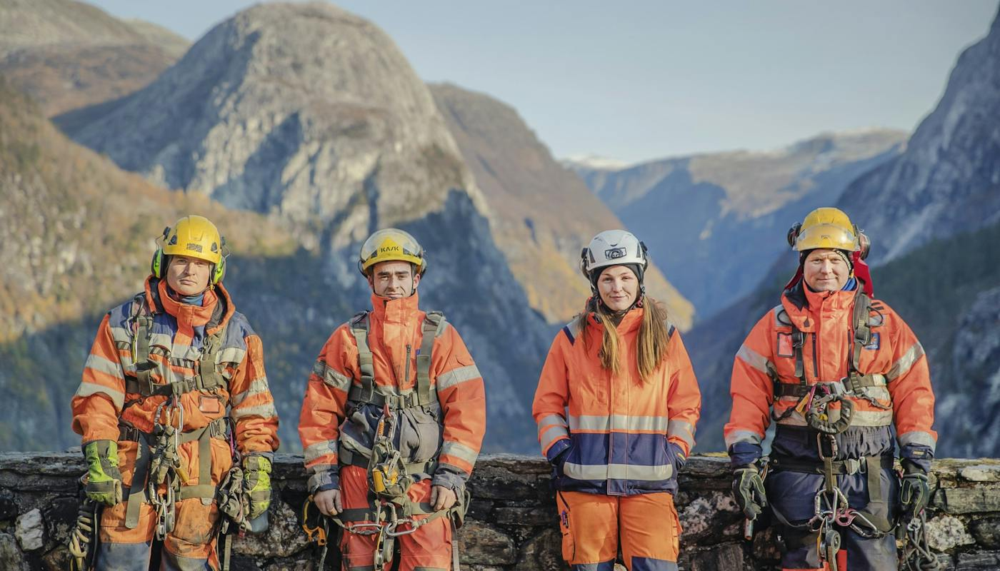

frisor
Om oss
Mesta holder til i Sjølyst.
Mesta holder til i Sjølyst og tar oppdrag innen informasjon til leverandører, informasjon til kunder, media og drift og vedlikehold.
Jeg har bodd 13 år i Norge og Mesta er min favorittarbeidsplass!” Hjem - Mesta Skip to content --> Tjenester Drift og vedlikehold Anlegg og spesialproduksjon Elektro Bane Grunnundersøkelser Historiene Menneskene i Mesta Historiene Om Mesta Konsernledelsen Styret i Mesta Rapporter Vedtekter Vår kultur Vår historie Visjon og verdier Mesta HMS håndbok Bærekraft Bransjens digitale mester For leverandører For kunder Kontakt Kontaktoversikt Skademeldingsskjema Hjelp til ditt prosjekt Mediebank Jobb i Mesta Tjenester Drift og vedlikehold Anlegg og spesialproduksjon Elektro Bane Grunnundersøkelser Historiene Menneskene i Mesta Historiene Om Mesta Konsernledelsen Styret i Mesta Rapporter Vedtekter Vår kultur Vår historie Visjon og verdier Mesta HMS håndbok Bærekraft Bransjens digitale mester For leverandører For kunder Kontakt Kontaktoversikt Skademeldingsskjema Hjelp til ditt prosjekt Mediebank Jobb i Mesta Følg oss! Søk Søk Mesta leverer lokal hverdagsberedskap med nasjonal betydning – også når vær og natur utfordrer oss --> Hvem er vi? Om Mesta Konsernledelse Styre Årsrapporter og kvartalsrapporter Kultur og historie Visjon og verdier Kvalitet og HMS Vedtekter Bærekraft og miljø Digitalisering Informasjon til leverandører Faktura til Mesta Tilbudsregler Standardvilkår Etikk HMS, kvalitet og miljø Kontraktsvilkår Varslingsskjema for UE Opplæringsmateriell Kontakt innkjøp Informasjon til kunder Startbank TransQ Utilities NCE Direktoratet for byggkvalitet Norsk stålforbund Jobb hos oss Karriere Ledige stillinger Lærling Media For presse Grafisk profil Våre partnere EBA Skift MEF Drift og vedlikehold Brøyting Feie veier Tunnelvask Asfaltering Rydding av vegetasjon Anlegg og spesialproduksjon Veianlegg Sjøanlegg Grunnarbeider Vann og avløp Tunnelsikring Fjellsikring Betong Vedlikehold og rehabilitering av bru Vedlikehold og rehabilitering av kai Energi og småkraftverk Stålprodukter Grunnboring og grunnundersøkelser Elektro Drift og vedlikehold Prosjekter Bane Spor, skinner og sviller Skogrydding Jernbaneelektro Signalanlegg Digitalisering av tog og bane Kompetente fagfolk Sikkerhet langs sporet Spesialtjenester Mesta grunnundersøkelser Historiene Aktuelt | 12.10.2026 Hurtigladenettverk for elektriske tungbiler åpnet Aktuelt | 03.08.2026 Elbiler har spart to millioner liter diesel 29.06.2026 Solid resultat i et krevende marked 23.03.2026 Mestafolk: Når millimeterne teller 18.03.2026 Ny økonomidirektør i Mesta Se flere historier Menneskene i Mesta Fagarbeider Anlegg Øst Ireneusz Szponar “Jeg har stor variasjon i arbeidsoppgavene og jeg har gode kolleger og fine prosjekter.
«Timebestilling som passer kundens dag»

Vil du vite mer?
Vi svarer på det du lurer på, uten bindende avtale.
Ta kontakt